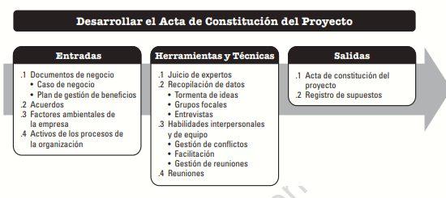

Para la fase de inicio se debe realizar el Acta de constitución del proyecto, es un documento en donde se autoriza formalmente la existencia de un proyecto y así mismo se autoriza al director del proyecto para asignar los recursos requeridos de la organización a las actividades del proyecto.
Es de vital importancia la creación del acta, ya que, por medio del documento se crea un registro formal del requerimiento a desarrollar, y se usa cuando se realiza el kick off. Allí se ven involucrado el presupuesto para el desarrollo del requerimiento, el gerente del proyecto, los riesgos generales, las personas involucradas para el desarrollo y una estimación general del requerimiento.
Este proceso se lleva a cabo una única vez o en puntos predefinidos del proyecto. En la siguiente grafica se muestran las entradas, herramientas y técnicas y salidas del proceso.

Las relaciones que se pueden dar en proyectos de más de una fase pueden relacionarse de diferentes formas, secuencial, paralela o en superposiciones que tendrán variaciones dependiendo de las características de desarrollo del proyecto
.